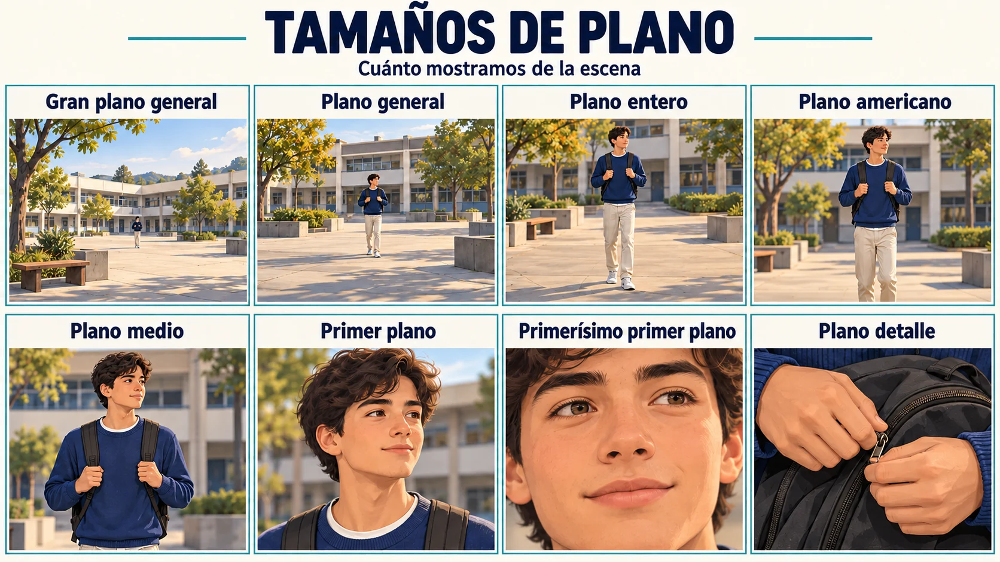
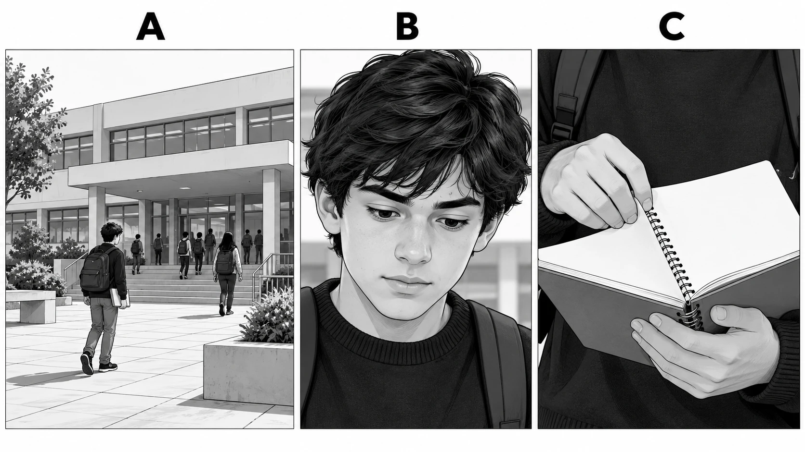

Guía · Página 1 · 0–8 min
Tema, propósito, planos y ángulos
¿Qué cambia en una imagen cuando cambiamos el plano o el ángulo?
Clase 1 · Tema, mensaje, propósito, planos y ángulos.
Tengan a mano la guía impresa, el cuaderno y un lápiz.
Guía · Página 1 · 0–8 min
Antes de comenzar
Piensen en un momento de su jornada: llegar al colegio, preparar sus materiales o compartir un recreo.
1. ¿Qué podría conocer de ustedes una persona al ver ese momento?
2. ¿Bastaría mostrar una lista de actividades para comunicar esa idea? Expliquen.
Respondan en la guía y compartan una observación.
Guía · Página 1 · 0–8 min
Normas de la clase
- Levantar la mano para hablar.
- Nos escuchamos.
- Uso del celular prohibido.
- Trabajar activamente en su guía.
Estas normas rigen durante toda la clase.
Guía · Página 1 · 0–8 min
Objetivo de la clase
Analizar el tema, el propósito, los planos y los ángulos en un vlog y en una escena propia, fundamentando con evidencias.
Al finalizar, explicarán con una evidencia qué comunica un plano o un ángulo.
Guía · Página 1 · 8–20 min
¿Qué es un vlog? ¿Quién comunica?
| Concepto | Qué nos permite analizar |
|---|---|
| Vlog | Relato audiovisual de una experiencia personal. Selecciona momentos y los comunica con imágenes y sonido. |
| Enunciador y audiencia | Quien comunica construye una voz y un rol; se dirige a personas con ciertos conocimientos e intereses. |
Leemos los conceptos y los relacionamos con una experiencia cotidiana.
Guía · Página 1 · 8–20 min
El tema
El tema es el asunto del que trata.
Pregunta: ¿De qué trata?
Ejemplo: La mañana de un estudiante antes de ir al colegio.
Ubiquen la definición en la tabla de la página 1.
Guía · Página 1 · 8–20 min
El mensaje
El mensaje es la idea que se construye sobre ese tema.
Pregunta: ¿Qué idea quiere que comprendamos?
Ejemplo: Las mañanas son apuradas, pero cada uno tiene su forma de enfrentarlas.
Ubiquen la definición en la tabla de la página 1.
Guía · Página 1 · 8–20 min
El propósito
El propósito es lo que se busca lograr en la audiencia: informar, entretener, convencer o emocionar.
Pregunta: ¿Para qué lo cuenta?
Ejemplo: Entretener y lograr que otros estudiantes se identifiquen.
Ubiquen la definición en la tabla de la página 1.
Guía · Página 2 · 8–20 min
Leemos · Qué historia se contará
Antes de leer: ¿qué tendría que decidir una persona para transformar una experiencia en imágenes?
Para crear un relato con imágenes, primero se decide qué historia se contará. El libreto organiza los personajes, sus acciones, el lugar y el tiempo. También permite anticipar la estructura del relato y las palabras que acompañarán las imágenes.
Sigan la lectura de la página 2. Adaptación de SM, GDD tomo 1, pp. 89–90.
Guía · Página 2 · 8–20 min
Leemos · El guion visual
El storyboard o guion visual es un borrador formado por viñetas. En cada una se indica qué acción se mostrará, dónde ocurrirá y qué plano se utilizará. La selección de gestos, posturas y detalles ayuda a representar las acciones y emociones. Por eso, una imagen puede aportar información que las palabras no entregan por sí solas.
Sigan la lectura de la página 2. Adaptación de SM, GDD tomo 1, pp. 89–90.
Guía · Página 2 · 8–20 min
Leemos · Revisar la relación
El trabajo puede comenzar desde un guion para construir imágenes, o desde imágenes para elaborar un relato. Revisar esa relación permite decidir si la secuencia comunica lo que se quiere contar.
Sigan la lectura de la página 2. Adaptación de SM, GDD tomo 1, pp. 89–90.
Guía · Página 2 · 8–20 min
Una escena, distintas decisiones

| Ubicar | Mostrar una acción | Destacar un detalle |
|---|---|---|
| El espacio ayuda a comprender dónde ocurre. | Las manos y los objetos permiten seguir lo que hace. | La cercanía dirige la atención hacia algo concreto. |
Comparen qué información aporta cada encuadre. Ilustración didáctica de IA.
Guía · Página 2 · 8–20 min
De las imágenes a una idea
En un vlog, estas decisiones se combinan con voz y sonido. Si el tema es el desayuno, el mensaje podría ser que el desayuno es un momento de pausa antes de salir. La voz y las imágenes deben permitir comprender esa idea.
Después de leer: ¿por qué un guion visual ayuda a comunicar una idea y no solo a reunir imágenes?
Respondan la pregunta después de leer, en la página 2.
Guía · Página 3 · 20–32 min
El plano: cuánto mostramos
El tamaño del plano indica cuánto del sujeto y de su entorno aparece dentro del encuadre. Su elección dirige nuestra atención: al lugar, a una acción, a una expresión o a un detalle.
Relacionen el encuadre con la información que deja ver.
Guía · Página 3 · 20–32 min
Tamaños de plano

Observen la lámina de la página 3. Toquen la imagen para ampliarla.
Guía · Página 3 · 20–32 min
Del entorno al cuerpo
| Plano | Qué muestra |
|---|---|
| Gran plano general | Un entorno muy amplio; las personas ocupan poco espacio. |
| General | La persona dentro del lugar; el entorno tiene importancia. |
| Entero | El cuerpo completo, de la cabeza a los pies. |
| Americano | La persona aproximadamente de la cabeza a las rodillas. |
Comparen gran plano general, general, entero y americano.
Guía · Página 3 · 20–32 min
Del rostro al detalle
| Plano | Qué muestra |
|---|---|
| Medio | La persona aproximadamente de la cabeza a la cintura. |
| Primer plano | El rostro y los hombros. |
| Primerísimo primer plano | El rostro muy cercano o una parte de él. |
| Detalle | Una parte del cuerpo, un objeto o una acción pequeña. |
Comparen qué cambia al acercar el encuadre.
Guía · Página 3 · 20–32 min
Del nombre a la intención
Para situar la llegada al colegio, puede servir un plano general. Para mostrar una expresión, un primer plano. Para destacar una acción de las manos, un plano de detalle. La elección debe aportar al mensaje de la escena.
¿Qué información perderíamos si mostramos solo el rostro, sin ubicar antes el lugar?
Respondan al final de la página 3 y justifiquen.
Guía · Página 4 · 20–32 min
El ángulo: desde dónde miramos
El ángulo indica la posición de la cámara respecto del sujeto. Puede combinarse con distintos tamaños de plano. Un primer plano, por ejemplo, puede grabarse con la cámara a la altura de los ojos o desde arriba.
Distingan el tamaño de plano de la posición de la cámara.
Guía · Página 4 · 20–32 min
Ángulos de cámara

Observen la lámina de la página 4. Toquen la imagen para ampliarla.
Guía · Página 4 · 20–32 min
Normal, picado y contrapicado
| Ángulo | Posición de la cámara |
|---|---|
| Normal | A la altura de los ojos o del objeto. |
| Picado | Por encima del sujeto y dirigida hacia abajo. |
| Contrapicado | Por debajo del sujeto y dirigida hacia arriba. |
Comparen la posición de la cámara respecto del sujeto.
Guía · Página 4 · 20–32 min
Otras posiciones de cámara
| Ángulo | Posición de la cámara |
|---|---|
| Cenital | Directamente encima, mirando verticalmente hacia abajo. |
| Nadir | Directamente debajo, mirando verticalmente hacia arriba. |
| Inclinado | Con la cámara girada: el horizonte queda inclinado. |
Consulten cenital, nadir e inclinado en la misma lámina.
Guía · Página 4 · 20–32 min
Una elección con sentido
Los efectos dependen de la escena, la actuación y los demás recursos. Un picado no significa siempre debilidad ni un contrapicado siempre poder.
Quieren mostrar cómo ordenan sus materiales sobre una mesa. ¿Qué ángulo elegirían y qué permitiría ver?
Respondan al final de la página 4. Expliquen qué permitiría ver.
Guía · Página 5 · 32–47 min
Antes del video · Qué vamos a registrar
Observen el vlog de Leo Bascuñán. Individualmente, copien y completen en su cuaderno las ocho filas. En cada una incluyan una observación y una escena, minuto o detalle que la respalde. La tabla de esta guía sirve de apoyo.
EnunciadorAudienciaTema y mensajePropósitoFormato y estructuraImagen y planosVoz, sonido y ediciónSelección y responsabilidad
Lean la instrucción antes de ver el video. Copien las ocho filas en el cuaderno.
Guía · Página 5 · 32–47 min
Observamos a Leo Bascuñán
Video: Un día COMIENDO por $1.000 pesos en CHILE en pleno 2024! · Leo Bascuñán · 12:20.
youtube.com/watch?v=h23SJatDO74 · El profesor lo proyectará.
Observen cómo se selecciona y organiza la experiencia.
El profesor proyecta el video. Reconozcan apertura, recorrido y cierre.
Guía · Página 5 · 47–65 min
Organizador · Quién habla y qué comunica
| Aspecto y pregunta guía | Mi observación | Escena, minuto o detalle |
|---|---|---|
| Enunciador ¿Quién habla y qué imagen de sí construye? | ||
| Audiencia ¿A quién parece dirigirse? ¿Qué pistas lo muestran? | ||
| Tema y mensaje ¿De qué trata y qué idea comunica? | ||
| Propósito ¿Qué busca provocar en quienes lo ven? |
Copien y completen las ocho filas en el cuaderno.
Guía · Página 5 · 47–65 min
Organizador · Cómo construye el relato
| Aspecto y pregunta guía | Mi observación | Escena, minuto o detalle |
|---|---|---|
| Formato y estructura ¿Cómo abre, conecta momentos y cierra? | ||
| Imagen y planos ¿Qué decide mostrar y qué aporta un encuadre? | ||
| Voz, sonido y edición ¿Qué aportan las palabras, los sonidos y los cortes? | ||
| Selección y responsabilidad ¿Qué parte de la experiencia se muestra y qué cuidados requiere? |
En cada fila, relacionen observación y escena, minuto o detalle.
Guía · Página 5 · 47–65 min
Revisamos dos filas
Revisión en parejas: contrasten dos filas. Pregunten qué evidencia sostiene cada respuesta y corrijan lo necesario. La audiencia y el propósito pueden inferirse; no conocemos la intención privada del autor.
En parejas: contrasten las evidencias y corrijan el organizador.
Guía · Página 6 · 65–73 min
Ejercicio · Observen A, B y C
Observen las imágenes A, B y C. Respondan individualmente y luego contrasten una respuesta con un compañero. Usen la lámina de planos para comprobar su elección.

Observen las imágenes de la página 6, sin adelantar las respuestas.
Guía · Página 6 · 65–73 min
Reconozcan los planos con una evidencia
| Imagen | Plano | ¿Qué parte del sujeto o del entorno lo demuestra? |
|---|---|---|
| A | ||
| B | ||
| C |
Respondan individualmente en la tabla de la página 6.
Guía · Página 6 · 65–73 min
Elijan según lo que quieren comunicar
a. Para ubicar al espectador en el lugar, ¿qué imagen elegirían? Expliquen qué permite comprender.
b. Para destacar la expresión del estudiante, ¿cuál elegirían? ¿Qué información deja fuera?
c. Si usan solo la imagen C, ¿qué necesitarían agregar para que se entienda el contexto?
Escriban las tres respuestas y contrasten una con un compañero.
Guía · Página 7 · 73–85 min
Aplicación · Una escena cotidiana
Elijan una situación cotidiana: llegar al colegio, preparar sus materiales, compartir un recreo o desayunar. Pueden imaginar la situación. Diseñen en papel una secuencia de tres imágenes; todavía no es la planificación del video completo.
Situación elegida:
¿Qué quiero que otra persona comprenda de esta experiencia?
Elijan la situación y escriban qué quieren que otra persona comprenda.
Guía · Página 7 · 73–85 min
Una escena, tres decisiones
Usen al menos dos tamaños de plano distintos. Bajo cada dibujo escriban el plano, el ángulo y lo que aporta al mensaje.
Imagen 1
Plano · Ángulo · Aporta al mensaje
Imagen 2
Plano · Ángulo · Aporta al mensaje
Imagen 3
Plano · Ángulo · Aporta al mensaje
Dibujen la secuencia y completen sus decisiones en la página 7.
Guía · Página 7 · 85–90 min
Revisen una decisión
En parejas, expliquen cómo la secuencia comunica su idea. Escuchen la sugerencia y señalen qué mantendrían o cambiarían.
Escuchen la sugerencia y escriban qué mantendrían o cambiarían.
Guía · Página 7 · 85–90 min
Volvemos a la pregunta de la clase
¿Qué cambia en una imagen cuando cambiamos el plano o el ángulo?
¿Cómo influye lo que mostramos y dejamos fuera en la manera en que otros comprenden nuestra experiencia? Respondan usando una decisión de su secuencia.
Respondan el cierre de la página 7 usando una decisión de su secuencia.